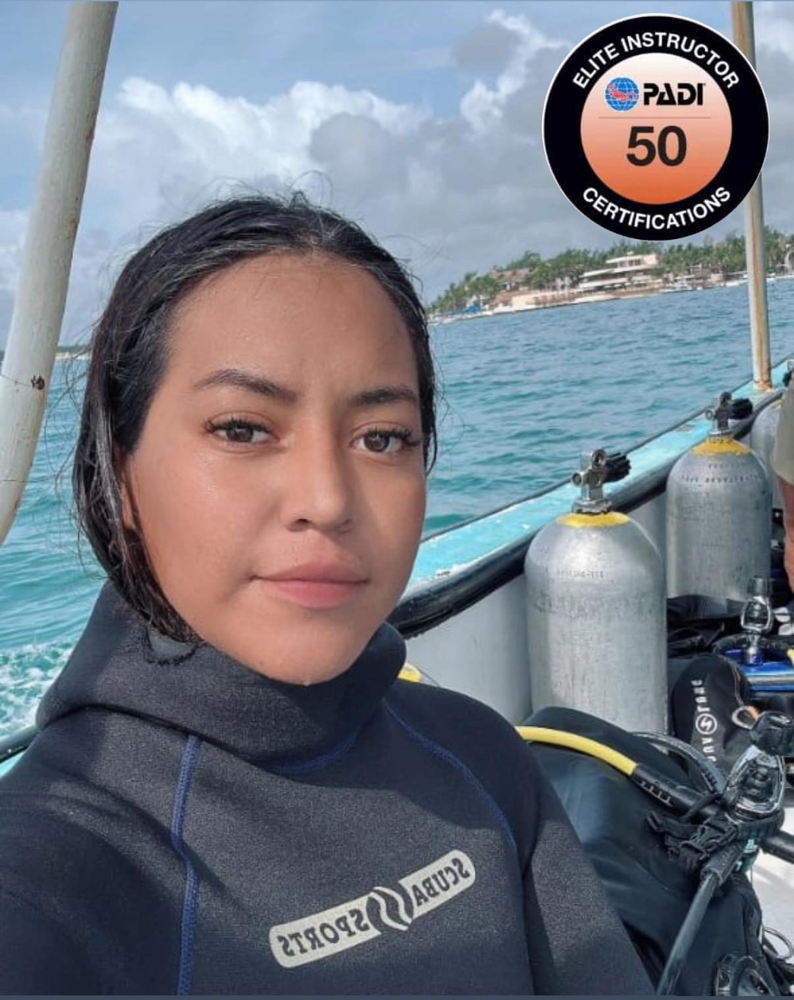

Galería Kaan: Momentos Sagrados


Desliza para ver más
El contraste perfecto con el océano:
Cielo arriba, profundidad abajo.

Soy Lydia Ramírez (Lyli), instructora de buceo apasionada por la conexión sagrada entre el cielo y el mar. "Kaan" significa cielo en maya, representando esa libertad que sentimos al descender al azul.
En Kaan Dive, mi objetivo es guiarte de forma segura y consciente, permitiéndote explorar la potencia natural de los arrecifes en Cozumel y la Riviera Maya mientras conectas con tu propia paz interior bajo el agua.
"En la profundidad encontramos la libertad."
Nuestro programa Discover Scuba Diving en Kaan Dive es la forma perfecta de experimentar las maravillas del mundo submarino sin necesidad de una certificación previa. Es una introducción segura, emocionante y supervisada profesionalmente.
Disfruta de dos inmersiones espectaculares desde embarcación, explorando los arrecifes más vibrantes de la zona. Ideal para buzos certificados que buscan aventura y biodiversidad en un entorno profesional.
Buceo 1: Pared profunda (18-25m) con formaciones coralinas.
Buceo 2: Arrecife somero (14-18m) ideal para vida macro y tortugas.
Descubre el mundo submarino bajo una luz diferente. La noche revela criaturas que se esconden durante el día, como pulpos, calamares y crustáceos, junto con el fenómeno de la bioluminiscencia.
Buceo de entrada por costa, tranquilo y con excelente visibilidad de vida nocturna.
Lámparas incluidas. Fotos y videos disponibles (Costo extra).
Este programa está diseñado para principiantes ansiosos por explorar el mundo submarino. Durante aproximadamente 3 días, recibirás una formación completa cubriendo técnicas esenciales, protocolos de seguridad y ecología marina.
A través de una combinación de sesiones teóricas, prácticas en aguas confinadas y emocionantes buceos en aguas abiertas, ganarás la confianza necesaria para ser un buzo certificado.
Una vez certificado, tendrás las habilidades para bucear con un guía u otro buzo certificado en cualquier parte del mundo.
¡Aprende sobre la teoría del buceo! Puedes hacerlo aquí en Cozumel o en casa online antes de llegar.
Sesiones prácticas en un entorno seguro como Playa Tikila, un lugar increíble para aprender.
Buceos reales a máx 18m. ¡Disfruta de 2 buceos de costa y 2 de barco en el Parque Marino!
Lleva tu buceo a nuevas profundidades con nuestro curso Avanzado. Diseñado para buzos certificados, este curso ofrece la oportunidad perfecta para explorar sitios emocionantes.
El curso Avanzado está diseñado para ganar confianza en una variedad de entornos. Durante 2-3 días, participarás en cinco emocionantes inmersiones de aventura.
Dominarás habilidades esenciales como buceo profundo y navegación, además de elegir especialidades como buceo nocturno, barcos hundidos o fotografía.
"Desafiante" y "recompensante" son las palabras que mejor describen este curso. Aprenderás a mirar más allá de ti mismo para considerar la seguridad y el bienestar de otros buzos.
A través de simulacros y teoría, aprenderás a identificar signos de estrés, gestionar emergencias y dominar técnicas de autorescate. Es un curso que te dará una confianza inigualable.
Este curso es fundamental para quienes quieren cuidar de sus compañeros y estar listos ante cualquier situación inesperada.
Sé un guardián del mar. Aprende a recolectar y reportar desechos marinos para proteger los arrecifes.
Entiende la fragilidad de los ecosistemas de coral y cómo tus acciones ayudan a su preservación global.
Domina el control de tu cuerpo bajo el agua. Reduce el consumo de aire y deslízate sin esfuerzo.
Entrenamiento especializado en primeros auxilios para atender a los más pequeños en entornos acuáticos.
¿Buscas algo específico como Buceo en Cenotes o Nitrox?
Preguntar por otras especialidades
Desliza para ver más